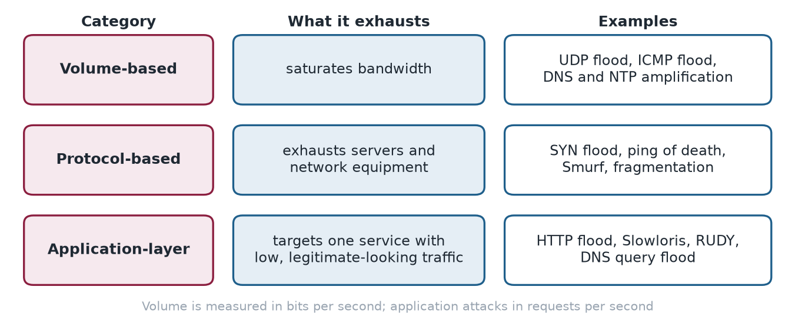

Chapter 8: Denial of Service in Depth¶
Denial-of-service attacks do not steal anything. They make a service unavailable by overwhelming it. Chapter 2 introduced them briefly; this chapter looks at them in depth, sorted into three categories according to what they exhaust: bandwidth, server and network-equipment resources, or a single application. It also lists the record-setting attacks of the last decade, which show how fast the scale has grown.
Layman analogy
DoS is one person lying across the entrance to a shop, blocking everyone from entering. DDoS is 50,000 people simultaneously blocking every entrance, exit, window, and ventilation shaft of an entire building.
8.1 DoS vs DDoS¶
- DoS — single source; relatively easy to block by filtering that one IP address
- DDoS — thousands or millions of sources (compromised botnet); nearly impossible to block by IP filtering alone
8.2 Volume-Based Attacks — Saturate Bandwidth¶
Flood the target with so much traffic that their internet connection is completely saturated.
UDP Flood: Spoofs the source IP address and sends UDP packets to all ports on the target. The server attempts to respond to every packet, consuming all available resources.
ICMP Flood (Ping Flood): Overwhelms the target with ICMP echo request (ping) packets at massive volume.
DNS Amplification: Send a small DNS request (with the victim's IP as the spoofed source) to public DNS servers. The DNS server sends a response up to 50x larger in size back to the victim. The attacker generates massive traffic while sending relatively little.
Layman analogy
You call a stranger, pretend to be your target, and request a 50-page fax be sent to the target's number. The fax machine (DNS server) sends 50 pages to the victim (target). The attacker barely did any work.
NTP Amplification: Uses Network Time Protocol servers which can respond with up to 556x the size of the request — the highest amplification ratio of any DDoS technique.
8.3 Protocol-Based Attacks — Exhaust Server Resources¶
Exploit weaknesses in network protocols to exhaust server memory, CPU, or connection tables.
SYN Flood: Exploits the TCP three-way handshake. The attacker sends thousands of SYN (connection initiation) packets but never sends the final ACK to complete the connection. The server allocates memory for each half-open connection and waits, eventually exhausting its connection table.
Ping of Death: Sends malformed, oversized ICMP packets that crash vulnerable systems when they attempt to reassemble them.
Smurf Attack: Broadcasts an ICMP request to an entire network using the victim's IP as the spoofed source. Every device on the network replies to the victim, multiplying the attack traffic.
8.4 Application Layer Attacks — Target Specific Services¶
Mimic legitimate user behaviour to exhaust application-specific resources. These use lower traffic volumes and are much harder to distinguish from normal usage.
HTTP Flood: Sends massive numbers of legitimate-looking HTTP GET or POST requests to a web server until it cannot process any more.
Slowloris: Opens thousands of HTTP connections to the server simultaneously, then sends data extremely slowly — just enough to keep each connection alive. The server waits for each request to complete, eventually exhausting its maximum concurrent connections.
RUDY (R-U-Dead-Yet): Sends HTTP POST requests with an extremely large, declared Content-Length, then drip-feeds the body one byte at a time, tying up server threads indefinitely.
8.5 Notable Real-World DDoS Attacks¶
- 2016 — Dyn DNS: 1.2 Tbps via Mirai botnet. Took down Twitter, Netflix, Reddit, Spotify, CNN.
- 2018 — GitHub: 1.35 Tbps via memcached amplification — at the time the largest DDoS ever recorded.
- 2020 — AWS Shield: 2.3 Tbps — surpassed GitHub to become the new record.
- 2022 — Google Cloud: 46 million requests per second (RPS) HTTPS flood from thousands of sources — the largest application-layer attack recorded at that time.
8.6 How the three categories compare¶

The categories also differ in how they are measured and how they are stopped. Volume is measured in bits per second and is answered with capacity, by mitigation services, content delivery networks and traffic scrubbing. Protocol attacks are answered by making the stack stateless where it can be (SYN cookies). Application-layer attacks are measured in requests per second and are the hardest to distinguish from real users, so they need rate limits, connection limits and behavioural analysis.
8.7 Defence tips¶
- Subscribe to DDoS mitigation services: Cloudflare, AWS Shield, Akamai, Imperva
- Implement rate limiting and connection limits at the network edge
- Configure SYN cookies to defend against SYN flood attacks without storing half-open connections
- Use anycast network routing to distribute attack traffic across multiple datacentres
- Use Content Delivery Networks (CDNs) to absorb volumetric attacks
- Enable traffic scrubbing for enterprise environments
8.8 Summary¶
- DoS comes from one source and is easy to block; DDoS comes from thousands of sources and cannot be stopped by blocking addresses.
- Volume-based attacks saturate bandwidth (amplification multiplies the traffic 50 to 556 times); protocol-based attacks exhaust state (SYN flood); application-layer attacks mimic users (Slowloris, RUDY, HTTP flood).
- Records have risen from 1.2 Tbps in 2016 to 2.3 Tbps in 2020, and application-layer attacks reached 46 million requests per second in 2022.
- Defences: mitigation services, rate limiting, SYN cookies, anycast, CDNs and scrubbing.
8.9 Exercises¶
-
Why does blocking a single IP address stop a DoS attack but not a DDoS attack?
Answer
In a DoS attack all the traffic comes from one source, so blocking it ends the attack. A DDoS attack comes from thousands or millions of bots, so there is no single address to block, and the sources are legitimate-looking machines.
-
NTP amplification can respond with up to 556 times the size of the request. How much traffic does an attacker's 2 Mbit/s of spoofed requests produce at the victim?
Answer
\(2\times556=1112\) Mbit/s, about 1.1 Gbit/s.
-
Why are application-layer attacks harder to detect than volume-based ones?
Answer
They use lower traffic volumes and mimic legitimate user behaviour, so they do not trip bandwidth alarms and cannot easily be told from a busy day.
-
Explain how Slowloris ties up a web server.
Answer
It opens thousands of HTTP connections and sends data very slowly, just enough to keep each one alive. The server waits for each request to complete and eventually reaches its maximum number of concurrent connections, so real users are refused.
-
Name four defences against DDoS attacks and the category each helps most with.
Answer
Mitigation services, CDNs and traffic scrubbing absorb volume-based attacks. SYN cookies defend against protocol-based attacks such as SYN floods. Rate limiting and connection limits at the edge help against application-layer attacks. Anycast routing spreads attack traffic across several data centres.